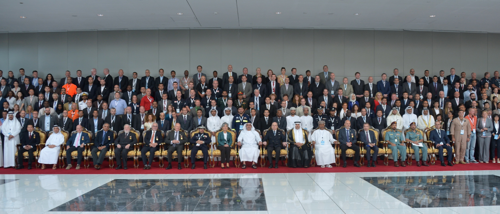

Secretary of INSARAG
and Chief FCSS, OCHA Geneva
Dear Colleagues and Friends,
The international and national urban search and rescue (USAR) community gathered for the second INSARAG global meeting and 25th anniversary of the International Search and Rescue Advisory Group (INSARAG) in Abu Dhabi, United Arab Emirates (UAE), from 18 to 19 October 2015, back-to-back with the three Working Groups Meetings, USAR Team Leaders Meeting and three Regional Groups Meetings on 20 October - the largest INSARAG gathering in history !
313 participants from 94 countries and organisations and more than 200 participants from the Abu Dhabi Police attended the meeting, leading to the 'INSARAG Abu Dhabi declaration', INSARAG's input to the World Humanitarian Summit in 2016.
As the UN Secretary-General said in his message on this occasion, " As INSARAG celebrates 25 years, you should all be proud of the success this community has achieved...The ability of the network to span continents and cultures is a testament to the commitment of its members and a model of best practice for the humanitarian community"
In the past week, I have received nothing but positive comments. As such, there is no doubt that we fully met our objectives for the series of INSARAG meetings. This astounding success surpassed all expectations, and I thank each and every one of you who contributed time, effort and commitment to making the week of INSARAG meetings in Abu Dhabi a historic and memorable event. Allow me to salute and thank again, all of you who made it possible.
By coming together, we have shown the humanitarian community that INSARAG remains a highly relevant network and can be called upon to deliver value added life-saving assistance based on agreed standards and will continue to improve our response to be "Fit for the Future".
Finally, we are very grateful to the UAE, the Ministry of Interior of the UAE, for hosting this event, UN and international/regional organizations and other entities that contributed.
Please find the session presentations in the links below for the Team Leaders and Global Meetings.
Best regards,
Jesper
Global Meeting Chariman's Summary
Abu Dhabi Declaration in English
Abu Dhabi Declaration in French
Abu Dhabi Declaration in Spanish
Abu Dhabi Declaration in Chinese
Abu Dhabi Declaration in Arabic
